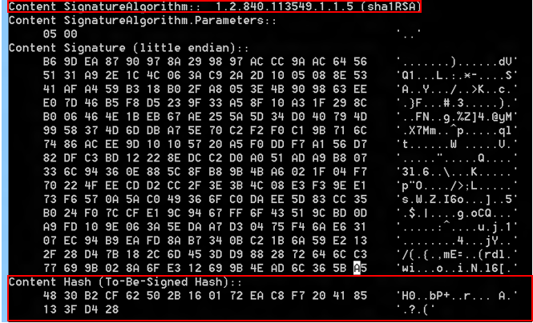

Windows 8.1 introduced a new concept of protected services to protect anti-malware services, which are a frequent target of attack by malware.
Learn about protecting anti-malware (AM) user mode services and how you can opt to include this feature in your anti-malware service.
This information applies to the following operating systems and their successors:
References and resources discussed here are listed at the end of this topic.
Most anti-malware solutions include a user-mode service that performs specialized operations to detect and remove malware from the system. This user-mode service is also frequently responsible for downloading the latest virus definitions and signatures. This user-mode service becomes a frequent target of malware because it’s the single point of failure to disable protection on a system. To defend against attacks on the user-mode service, anti-malware vendors have to add a lot of functionality and heuristics to their software. However, such techniques are not completely foolproof and tend to be error prone because they have to identify functionality that Windows performs on their service and selectively enable that functionality.
In Windows 8.1, a new concept of protected service has been introduced to allow anti-malware user-mode services to be launched as a protected service. After the service is launched as protected, Windows uses code integrity to only allow trusted code to load into the protected service. Windows also protects these processes from code injection and other attacks from admin processes.
This document describes how an anti-malware vendor with an Early Launch Anti-Malware (ELAM) driver can opt-in to this feature and launch their anti-malware service as a protected service.
Starting with Windows 8.1, a new security model has been put in place in the kernel to better defend against malicious attacks on system-critical components. This new security model extends the protected process infrastructure previous versions of Windows used for specific scenarios, such as playing DRM content, into a general-purpose model that can be used by 3rd party anti-malware vendors. The protected process infrastructure only allows trusted, signed code to load and has built-in defense against code injection attacks.
[!NOTE] The following scripting DLLs are forbidden by CodeIntegrity inside a protected process (whether loaded directly or indirectly) such as via WinVerifyTrust or WinVerifyTrustEx for checking script signatures via AuthentiCode:
scrobj.dll,scrrun.dll,jscript.dll,jscript9.dll, andvbscript.dll.
See Protected Processes in Windows Vista for more information on protected processes.
The new security model uses a slightly different variant of the protection process infrastructure called system protected process, which is more suitable for this feature as this keeps the DRM content separate. Each system protected process has an associated level or attribute, which indicates the signature policy of the signed code allowed to load within the process. After the anti-malware services have opted into the protected service mode, only Windows signed code or code signed with the anti-malware vendor’s certificates are allowed to load in that process. Similarly, other protected process levels have different code policies enforced by Windows.
For an anti-malware user-mode service to run as a protected service, the anti-malware vendor must have an ELAM driver installed on the Windows machine. In addition to the existing ELAM driver certification requirements, the driver must have an embedded resource section containing the information of the certificates used to sign the user mode service binaries.
[!IMPORTANT] In Windows 8.1, the certification chain either has to be a known root as determined by driver verification, or the root certificate must be included.
During the boot process, this resource section will be extracted from the ELAM driver to validate the certificate information and register the anti-malware service. The anti-malware service can also be registered during the anti-malware software installation process by calling a special API, as described later in this document.
After the resource section is successfully extracted from the ELAM driver and the user-mode service is registered, the service is allowed to launch as protected service. After the service is launched as protected, other non-protected processes on the system won't be able to inject threads, and they wont' be allowed to write into the virtual memory of the protected process.
In addition, any non-Windows DLLs that get loaded into the protected process must be signed with an appropriate certificate.
See Early launch antimalware for more information on ELAM drivers.
The user-mode service that needs to be launched as protected must be signed with valid certificates. The service EXE must be page hash signed, and any non-Windows DLLs that get loaded into the service must be also signed with the same certificates. The hash of these certificates must be added into the resource file, which will be linked into the ELAM driver.
[!NOTE]
SHA256 file/page hashes must be used, though certificates may continue to be SHA1.
We recommend that anti-malware vendors use their existing Authenticode certificate to sign their anti-malware service binaries, and that the hash of this Authenticode certificate be included in the resource section to indicate the certificate that's used to sign the service binaries. If you update this certificate, a newer version of the ELAM driver must be released with the updated certificate hashes.
Anti-malware vendors have the option to set up a private CA and use certificates from this CA to code sign the anti-malware service binaries as a secondary signature. The main advantage of using the private CA is that it enables vendors to create certificates with a specialized EKU property, which can be used to differentiate between multiple products from the same vendor. It also reduces the need to update your ELAM driver due to certificate expiry, as the private CA certs typically have longer expiry dates.
Note that if the service binaries are signed with the private CA certs, the binaries must also be dual signed with the existing Authenticode certificates. If the binaries are not signed by a well-known trusted CA (for example VeriSign), the user of the machine has no confidence in the binaries because they cannot trust the private CA. Dual signing the binaries with the existing Authenticode certificate also allows the binaries to run on down-level operating systems.
For more info about how to set up and install the Certificate Authority, see Setting Up a Certificate Authority and Install the Certification Authority.
[!NOTE]
For compatibility with Windows Vista or Windows XP (or Windows 7 without the SHA2 patch), you can use the "/as" switch when signing your binaries with SignTool.exe with the SHA256 file/page hashes. This will add the signature as a secondary signature to the file. SHA1 sign the file first, since Windows XP, Windows Vista, and Windows 7 will only see the first signature.
As mentioned earlier, any non-Windows DLLs that get loaded into the protected service must be signed with the same certificate that was used to sign the anti-malware service.
Anti-malware vendors can include packages developed by other companies without updating the binary signatures. This can be achieved by including the binaries in a catalog which is signed with their Authenticode certificate, accomplished by following these steps:
When code integrity comes across the packages without an appropriate signature, it will search for a catalog with an approved signature. It will find this catalog as long as these steps are followed and it is installed with the application.
A resource file must be created and linked into the ELAM driver. The hash of the certificate, along with other certificate information, must be added in the resource file.
The resource section must be in the following layout for the system to successfully extract the resources from the binary image and validate the embedded certificate information.
MicrosoftElamCertificateInfo MSElamCertInfoID
{
3, // count of entries
Lâ€CertHash1\0â€,
Algorithm,
Lâ€EKU1\0â€,
Lâ€CertHash2\0â€,
Algorithm,
Lâ€\0â€, //No EKU for cert hash 2
Lâ€CertHash3\0â€,
Algorithm,
Lâ€EKU3a;EKU3b;EKU3c\0â€, //multiple EKU entries supported (max: 3)
}
For more info about user-defined resource file, see User-Defined Resource.
The hash of the certificate that's used to sign the anti-malware service. The CertUtil.exe tool, which ships in the Windows SDK, can be used to obtain the hash.
certutil.exe –v <path to the signed file>
For example:

The algorithm value represents the algorithm of the certificate. These algorithm values are supported:
Remember to include the value of the algorithm (as shown above) and not the actual name of the algorithm. For example, if the cert is based on the SHA256 algorithm, include 0x800c in the resource section.
The EKU object represents a single extended key usage (EKU) property of a certificate. This is optional and “\0†should be specified if no EKUs are associated with the cert. In a case where there are multiple products and services from a single anti-malware vendor running on the same system, the anti-malware vendor can use the EKU property of the private CA certificate to differentiate one service from another. For example, if there are two services running on the system from the same anti-malware vendor and signed by the same CA, the service that needs to be launched as protected can be signed with a cert issued by CA that contains a special EKU. This EKU must be added to the resource section. The EKU is then registered by the system and paired with the certificate hash for validating and launching the service as protected.
Note that the certificate chain must include the Code Signing EKU (1.3.6.1.5.5.7.3.3), but this EKU must not be included in the resource section of the ELAM driver.
[!NOTE] If EKU information is included in certificate information for the ELAM driver, then the same EKU must be used when signing your binaries.
[!NOTE] Windows code integrity's string representation of an OID in a EKU has a maximum length of 64 characters, including the zero termination character. Â [!NOTE] If you specify multiple EKUs, then they are evaluated with
ANDlogic. The end-entity certificate must satisfy all EKUs specified in the ELAM resource section for the given entry.
If the anti-malware service binary is signed with the Authenticode certificate as well as the private CA certificate, only the private CA certificate information must be added in the resource section.
The anti-malware service must be registered with the system before it can be started as protected. During the installation of the anti-malware software, the installer can install the ELAM driver and reboot the system to automatically register the service. The system will register the service at boot time by extracting the certificate information from the aforementioned resource file that is linked into the ELAM driver.
During the installation phase, it is highly recommended that the system is restarted in order for the ELAM driver to get loaded and validate the state of the system. However, for cases where a reboot must be avoided, Windows also exposes a mechanism for the anti-malware installer to register the service as protected using an API.
During the installation, an anti-malware software installer can call the InstallELAMCertificateInfo API and provide a handle to the ELAM driver file. The system opens the ELAM driver, calls internal routines to make sure the ELAM driver is signed properly, and extracts the certificate information from the resource section associated with the ELAM driver. For function syntax see InstallELAMCertificateInfo.
Code example:
HANDLE FileHandle = NULL;
FileHandle = CreateFile(<Insert Elam driver file name>,
FILE_READ_DATA,
FILE_SHARE_READ,
NULL,
OPEN_EXISTING,
FILE_ATTRIBUTE_NORMAL,
NULL
);
if (InstallElamCertificateInfo(FileHandle) == FALSE)
{
Result = GetLastError();
goto exitFunc;
}
The installer can follow these steps to create, configure, and start the service as protected:
Call the CreateService API to create a service object and add it to the service control manager (SCM) database.
Call the SetServiceObjectSecurity API to set the security descriptor of the service object created in step 1.
Call the ChangeServiceConfig2 API to mark the service as protected, specifying the new SERVICE_CONFIG_LAUNCH_PROTECTED enumeration value, which has been added in Winsvc.h (as of Windows 8.1).
Code example:
SERVICE_LAUNCH_PROTECTED_INFO Info;
SC_HANDLE hService;
Info.dwLaunchProtected = SERVICE_LAUNCH_PROTECTED_ANTIMALWARE_LIGHT;
hService = CreateService (/* ... */);
if (ChangeServiceConfig2(hService,
SERVICE_CONFIG_LAUNCH_PROTECTED,
&Info) == FALSE)
{
Result = GetLastError();
}
Call the StartService API to start the service. When starting the service as protected, SCM checks with Code Integrity (CI) subsystem to validate the certificate information. After the certificate information is validated by CI, SCM launches the service as protected.
The new security model also allows the anti-malware protected services to launch child processes as protected. These child processes will run at the same protection level as the parent service and their binaries must be signed with the same certificate that has been registered via ELAM resource section.
In order to allow anti-malware protected service to launch child process as protected, a new extended attribute key, PROC_THREAD_ATTRIBUTE_PROTECTION_LEVEL, has been exposed and must be used with the UpdateProcThreadAttribute API. A pointer to the attribute value of PROTECTION_LEVEL_SAME must be passed into the UpdateProcThreadAttribute API.
Notes:
Code example:
DWORD ProtectionLevel = PROTECTION_LEVEL_SAME;
SIZE_T AttributeListSize;
STARTUPINFOEXW StartupInfoEx = { 0 };
StartupInfoEx.StartupInfo.cb = sizeof(StartupInfoEx);
if (InitializeProcThreadAttributeList(NULL,
1,
0,
&AttributeListSize) == FALSE)
{
Result = GetLastError();
goto exitFunc;
}
StartupInfoEx.lpAttributeList = (LPPROC_THREAD_ATTRIBUTE_LIST) HeapAlloc(
GetProcessHeap(),
0,
AttributeListSize
);
if (InitializeProcThreadAttributeList(StartupInfoEx.lpAttributeList,
1,
0,
&AttributeListSize) == FALSE)
{
Result = GetLastError();
goto exitFunc;
}
if (UpdateProcThreadAttribute(StartupInfoEx.lpAttributeList,
0,
PROC_THREAD_ATTRIBUTE_PROTECTION_LEVEL,
&ProtectionLevel,
sizeof(ProtectionLevel),
NULL,
NULL) == FALSE)
{
Result = GetLastError();
goto exitFunc;
}
PROCESS_INFORMATION ProcessInformation = { 0 };
if (CreateProcessW(ApplicationName,
CommandLine,
ProcessAttributes,
ThreadAttributes,
InheritHandles,
EXTENDED_STARTUPINFO_PRESENT | CREATE_PROTECTED_PROCESS,
Environment,
CurrentDirectory,
(LPSTARTUPINFOW)&StartupInfoEx,
&ProcessInformation) == FALSE)
{
Result = GetLastError();
goto exitFunc;
}
After the anti-malware service is launched as protected, other non-protected processes (and even admins) aren't able to stop the service. In the case of updates to the service binaries, the anti-malware service needs to receive a callback from the installer to stop itself so that it can be serviced. After the service is stopped, the anti-malware installer can perform upgrades and then follow the steps described above in the Registering the service and Starting the service as protected sections to register the certificate and start the service as protected.
Note that the service should ensure that only trusted callers can stop the service. Allowing untrusted callers to do so defeats the purpose of protecting the service.
When you uninstall a protected service, the service must mark itself as unprotected by calling the ChangeServiceConfig2 API. Note that because the system doesn't allow any non-protected process to alter the configuration of a protected service, the call to ChangeServiceConfig2 must be made by the protected service itself. After the service has been reconfigured to run as unprotected, the uninstaller can simply take appropriate steps to remove the anti-malware software from the system.
As part of the protected process security model, other non-protected processes aren't able to inject threads or write into the virtual memory of the protected process. However a kernel debugger (KD) is allowed for debugging any anti-malware protected processes. The KD can also be used to check if the anti-malware service is running as protected or not:
dt –r1 nt!_EPROCESS <Process Address>
+0x67a Protection : _PS_PROTECTION
+0x000 Level : 0x31 '1'
+0x000 Type : 0y0001
+0x000 Signer : 0y0011
If the value of the Type member is 0y0001, the service is running as protected.
In addition, only the following SC commands are allowed on anti-malware protected service:
sc config start=Autosc qcsc startsc interrogatesc sdshowIf the debugger is attached, use the following flag in the registry to break in the debugger when unsigned (or inappropriately signed) binaries are loaded into the anti-malware protected service.
Key: HKEY_LOCAL_MACHINE\SYSTEM\CurrentControlSet\Control\CI
Value: DebugFlags REG_DWORD
Set the value to 00000400 to break in the debugger when the signature validation fails.
[!NOTE]
Protected Process limitations:
- Processes that have UI or a GUI cannot be protected because of the way the kernel locks a process in memory and does not allow writes to it.
- Prior to Windows 10, version 1703 (the Creators update), protected processes cannot use the TLS or SSL communication protocols due to limitations of certificate sharing between the Local Security Authority (LSA) and a protected process.
For more info, see:
These Windows API functions are referenced in this article: